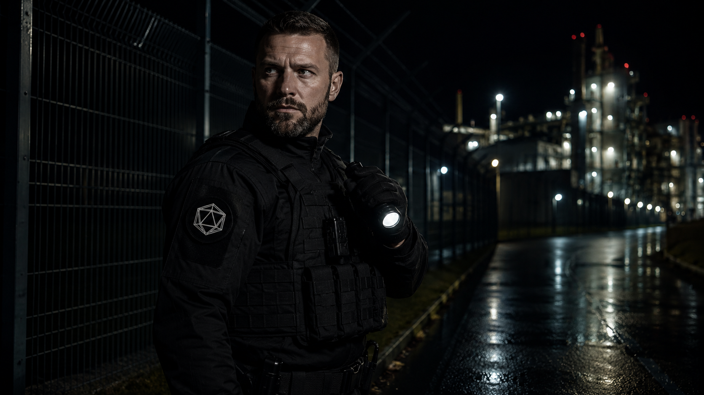

Capabilities
Five integrated disciplines — each designed to address a distinct threat vector, and engineered to operate as a unified protection architecture.

Kairon's physical security division provides comprehensive protection for high-value assets including government facilities, corporate campuses, data centres, and critical infrastructure. Our operatives are drawn from elite military and law enforcement backgrounds, supplemented by advanced sensor and monitoring technology.
Our executive protection programme provides discreet, world-class close protection for heads of state, senior government officials, C-suite executives, and high-net-worth individuals. We operate globally in both benign and hostile environments, with a reputation for absolute professionalism.
The Cipher Division operates at the intersection of cybersecurity and intelligence. We do not simply defend — we pursue adversaries, understand their methodologies, and disrupt their operations before they can achieve their objectives against our clients.
The Vanguard Unit provides rapid-response tactical capabilities for clients operating in complex, high-risk environments. Drawn from special forces backgrounds, Vanguard operatives are trained for a spectrum of contingencies from hostile extractions to facility counter-seizure operations.
People remain the most exploitable vulnerability in any security architecture. Our Psychological Security division addresses insider threats, social engineering, influence operations, and the cognitive dimensions of security that technology alone cannot resolve.
Engage Kairon